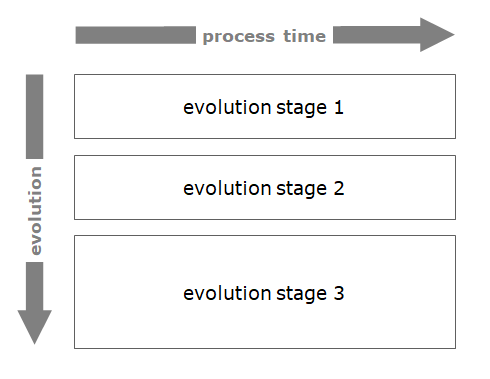
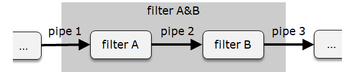
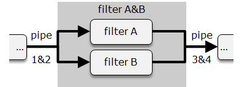

TtDT - Report - bCLEARer\'s pipeline or pipe-and-filter architecture
Introduction
As is often noted in the literature (see, for example, the extract in Appendix - The standard \'Pipeline\' or \'Pipe-and-Filter\' Architecture{linked-resource-id="5773197350" linked-resource-version="13" linked-resource-type="page"}), data transformation systems typically have a 'pipeline' or 'pipe-and-filter' architecture. (\'Pipe-and-filter\' is the original name for this architecture, though 'pipeline' is a more common name nowadays.) The bCLEARer approach is a data transformation process and so, unsurprisingly, is implemented with a pipeline architecture -- giving rise to a bCLEARer pipeline. Large pipelines are typically given a hierarchical, nesting structure to facilitate management - the specifics of this are discussed in the next section. In this section, we look at the pipeline architecture, including how it can be nested.
[]{#Bookmark13}
Visualising the pipeline flow
[This architecture]{.inline-comment-marker ref="f2d0e600-cc88-4038-86bd-247574e3f9d1"} consists of a sequence of processing components, arranged so that the output of each component is the input of the next one creating a 'flow'. A simple visualisation of a pipeline flow is given below:
[
\ [The pipeline architecture has, as the \'pipe-and-filter\' name suggests, a series of pipe and filter components, where pipes pass data to and from filters that transform the passed data - the pipeline flow.]{.inline-comment-marker ref="211d1c6a-8948-44fa-9071-e4eab05bc8ee"} As well as the general inter-filter pipes, t[here are ]{.inline-comment-marker ref="e9b81eeb-f051-4e89-a342-5a08fba0b790"}[[two specific types of pipes]{.inline-comment-marker ref="e9b81eeb-f051-4e89-a342-5a08fba0b790"}]{.inline-comment-marker ref="dcca3279-02f2-44e4-a470-e58f94b6b8af"}, the [start and end pipes; ]{.inline-comment-marker ref="211d1c6a-8948-44fa-9071-e4eab05bc8ee"}a data source (pipe) to feed the pipeline and a data target (pipe) to persist the transformed data. As illustrated in the figure above, these pipes are typically adorned with a dataset collection icon (as shown below).
[ {.confluence-embedded-image
.image-center}]{.confluence-embedded-file-wrapper
.image-center-wrapper}[]{#Bookmark14}
{.confluence-embedded-image
.image-center}]{.confluence-embedded-file-wrapper
.image-center-wrapper}[]{#Bookmark14}
Process time
Conventionally, the pipeline flow - pipes passing data and filters transforming it - is shown across the diagram from left to right. This is made explicit in some diagrams with the use of a 'process time' arrow, as shown below.
[ {.confluence-embedded-image
.image-center}]{.confluence-embedded-file-wrapper
.image-center-wrapper}[]{#Bookmark15}
{.confluence-embedded-image
.image-center}]{.confluence-embedded-file-wrapper
.image-center-wrapper}[]{#Bookmark15}
Evolutionary time
[The ]{.inline-comment-marker ref="3089a09a-2bd3-41c2-90cb-1b9d830b98c5"}[[flow itself will typically evolve over time]{.inline-comment-marker ref="3089a09a-2bd3-41c2-90cb-1b9d830b98c5"},]{.inline-comment-marker ref="16019b8f-4a83-4037-8adf-527652066be1"} pipes and filters may be added and removed - or changed. One needs be able to represent this evolution in diagrams. This is typically represented as a series of snapshots of the pipeline (process) arranged down the page with an arrow from top to bottom showing the direction of evolution -- a pro-forma example of this is in the figure below.
[{.confluence-embedded-image .image-center}]{.confluence-embedded-file-wrapper .image-center-wrapper}[]{#Bookmark16}
Pipeline components
The pipeline has two core components, \'filters\' and \'pipes\' (including the [data source and data target pipes).]{.inline-comment-marker ref="a3be927c-c261-40ef-b401-b210c4f772a9"}
[]{#Bookmark17}
Filters
Filters are components that transform (\'filter\') data that is received as an input via pipe connectors. The icon for a filter is shown below:
[ {.confluence-embedded-image
.image-center}]{.confluence-embedded-file-wrapper
.image-center-wrapper}[]{#Bookmark18}
{.confluence-embedded-image
.image-center}]{.confluence-embedded-file-wrapper
.image-center-wrapper}[]{#Bookmark18}
Pipes
Pipes are the connectors for filters. The role of a pipe is to pass messages, or information, to and from filters. The flow is unidirectional, and, when needed in an implementation, the data is persisted [until]{.inline-comment-marker ref="442ff4a2-b5e2-4456-ada5-38c49d6703d2"} the filter processes it. The icon for a pipe is shown below:
[ {.confluence-embedded-image
.image-center}]{.confluence-embedded-file-wrapper
.image-center-wrapper}[]{#Bookmark19}
{.confluence-embedded-image
.image-center}]{.confluence-embedded-file-wrapper
.image-center-wrapper}[]{#Bookmark19}
[Pipes adorned with data]{.inline-comment-marker ref="6d57a692-1168-49ec-9e4a-08e1d1d80868"}
[As noted earlier, there is a data source pipe at the start of the pipeline to feed it and a data target pipe at the end of the pipeline to persist the transformed data. And these are usually adorned with a dataset collection icon. All pipes, not just the start and end pipes, transport data. Optionally, this point can be highlighted through the use of a data icon (in this case, the dataset collection icon) on all pipes in the diagram including those pipes inside the pipelines -- as shown below for pipes 2 and 3.]{.inline-comment-marker ref="7ea67c64-f77f-4ab2-92db-55a665d623e4"}
[ {.confluence-embedded-image
.image-center}]{.confluence-embedded-file-wrapper
.image-center-wrapper}[]{#Bookmark20}
{.confluence-embedded-image
.image-center}]{.confluence-embedded-file-wrapper
.image-center-wrapper}[]{#Bookmark20}
Filters and their pipes
Filters always have an input pipe and an output pipe, as shown in the following diagram:
[ {.confluence-embedded-image
.image-center width="340"
height="61"}][]{#Bookmark21}
{.confluence-embedded-image
.image-center width="340"
height="61"}][]{#Bookmark21}
Acyclic pipeline flow
A filter's pipe cannot flow to itself, either directly or indirectly. The flow is acyclic -- with no cycles. This does not inhibit reuse, as the same processing may be reused in different filters.
[ {.confluence-embedded-image
.image-center}]{.confluence-embedded-file-wrapper
.image-center-wrapper}[]{#Bookmark22}
{.confluence-embedded-image
.image-center}]{.confluence-embedded-file-wrapper
.image-center-wrapper}[]{#Bookmark22}
Multiple pipes to and from different filters
A filter can have several input pipes and several output pipes, as shown in the following diagram:
[{.confluence-embedded-image .image-center width="340" height="205"}][]{#Bookmark23}
Merging and splitting pipelines
Filters with multiple input and output pipes can be organised into pipeline flows that split and then merge -- as shown below.
[ {.confluence-embedded-image
.image-center width="340"
height="168"}][]{#Bookmark24}
{.confluence-embedded-image
.image-center width="340"
height="168"}][]{#Bookmark24}
[Multiple pipes between the same filters]{.inline-comment-marker ref="12ac3dba-793e-438b-8455-70fb414ab9d2"}
None of a filter\'s pipes should flow to the same destination -- where this happens, the pipes should be encapsulated - as shown in the diagram below.\
[{.confluence-embedded-image .image-center}]{.confluence-embedded-file-wrapper .image-center-wrapper}[]{#Bookmark25}
[Pipes: single or multiple filter inputs ]{.inline-comment-marker ref="29f86689-f1a3-4a12-bc6a-44ef729d26f4"}
[Typically a pipe will have a single filter output fed by a single filter input.]{.inline-comment-marker ref="97896ef2-9a31-4021-b7ae-f0a526fefdcb"} However, there can be cases where it is important to record that the same data is fed from one filter to many other filters. In these cases, the pipe is shown with a single filter output feeding multiple filter inputs. Pro-forma examples of these two cases are in the figure below.
[ {.confluence-embedded-image
.image-center}]{.confluence-embedded-file-wrapper
.image-center-wrapper}[]{#Bookmark26}
{.confluence-embedded-image
.image-center}]{.confluence-embedded-file-wrapper
.image-center-wrapper}[]{#Bookmark26}
Nesting
Any subset of filters in a pipeline forms a sub-pipeline, however, it can be useful to distinguish between pipelines that are connected and disconnected -- see below.\ \
[ {.confluence-embedded-image
.image-center width="442"
height="168"}]
{.confluence-embedded-image
.image-center width="442"
height="168"}]
This makes it simple to organise a sub-pipeline into a nested pipeline -- as shown below.
[{.confluence-embedded-image .image-center width="442" height="197"}]
One can view the nesting in a diagram - as shown below.
[{.confluence-embedded-image .image-center width="442" height="89"}][]{#Bookmark27}
Nesting -- pipe encapsulation
Where a nesting is going to encapsulate a number of filters, one consequence may be that a filter outside the nesting, whose pipes previously fed into multiple filters, now feeds into (or is fed from) a single encapsulated filter. In this case, the rule \'Multiple pipes between the same Filters\' mentioned above comes into play, and the pipes need to be [encapsulated ]{.inline-comment-marker ref="5eaca54b-1ad1-4840-9d07-06bda21c7456"}to ensure in the nested pipeline there are not multiple pipes between the same (nested) filters - as shown in the figure below (as an aside, note the sub-pipeline is technically disconnected).

We can see the original [multiple pipes]{.inline-comment-marker ref="36a5b8c5-4fd2-411e-a5f4-9d2033fbbc62"} in the nesting diagram - as shown in the figure below.
